2. Special Relativity
1. Galilean Transformation
①
$$ \begin{cases} x = x' + vt' \\ y = y' \\ z = z' \\ t = t' \end{cases} $$②
$$ \vec{r} = \vec{r}' + \vec{r}_{origin} \quad \text{Absolute = Relative + Entrainment} $$ $$ \therefore \vec{v} = \vec{v}' + \vec{v}_{entrainment} $$ $$ \therefore \vec{a} = \vec{a}' + 0 \quad (\because m = m', \therefore \vec{F} = \vec{F}') $$Translational inertial force: $\vec{F}_{inertial} = -m\vec{a}$
Rotational inertial force (Centrifugal force): $\vec{F}_{centrifugal} = -m\vec{\omega} \times (\vec{\omega} \times \vec{r}')$
Coriolis force: $\vec{F}_{coriolis} = -2m\vec{\omega} \times \vec{v}'$
③ Doppler Effect:
1) Observer moving at speed $v_R$:
$$ \nu_R = \frac{v+v_R}{\lambda} = \frac{v+v_R}{v/\nu} = \frac{v+v_R}{v}\nu $$($v_R$ direction towards the source is positive, away is negative)
2) Source moving relative to the medium at speed $v_S$:
$$ \nu_S = \frac{v}{\lambda-\frac{v_S}{\nu}} = \frac{v}{\frac{v}{\nu}-\frac{v_S}{\nu}} = \frac{v}{v-v_S}\nu $$($v_S$ direction towards the observer is positive, away is negative)
3) General case:
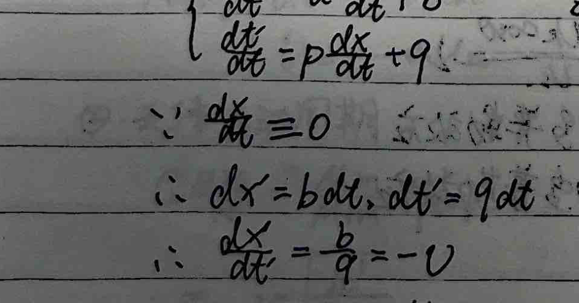
$$ \nu' = \frac{v+v_R\cos\theta}{v-v_S}\nu $$There is only a longitudinal Doppler effect.
There is no transverse Doppler effect.
2. Lorentz Transformation
① Basic Postulates:
1) All inertial frames are equivalent (reference frames where the law of inertia holds are inertial frames) — Principle of Relativity.
2) The speed of light in vacuum is constant in all inertial frames — Principle of the Constancy of the Speed of Light.
② Lorentz Transformation: ensures all physical laws have covariant coordinate transformation formulas.
1) Suppose inertial frame K' moves relative to inertial frame K along the $x$ direction with speed $v$.
When $x=x'=0$, $y=y'=0, z=z'=0, t=t'=0$.
2) The principle of relativity requires that the coordinate transformation from $K(x,y,z,t)$ to $K'(x',y',z',t')$ should be symmetric, i.e., both the forward and inverse transformations are the same kind of function. This requirement stems from the homogeneity of space. The transformation satisfying this requirement must be a linear function.
$$ \begin{cases} x' = ax + bt \\ t' = px + qt \end{cases} \Rightarrow \begin{cases} x = \frac{q}{aq-bp}x' - \frac{b}{aq-bp}t' \\ t = \frac{a}{aq-bp}x' - \frac{p}{aq-bp}t' \end{cases} $$Since the relative motion only occurs in the $x$ direction, thus:
$$ \begin{cases} y' = y \\ z' = z \end{cases} $$3) The principle of the constancy of the speed of light requires: if a flash of light is emitted from the origin at time $t=t'=0$, then in both inertial frames:
$$ \begin{cases} x^2+y^2+z^2-c^2t^2=0 \\ x'^2+y'^2+z'^2-c^2t'^2=0 \end{cases} $$For any arbitrary event, let $x+y^2+z^2-c^2t^2 = \lambda(x'^2+y'^2+z'^2-c^2t'^2+A)$.
Due to symmetry and continuity, we have $x'^2+y'^2+z'^2-c^2t'^2 = x^2+y^2+z^2-c^2t^2$.
4) In the K frame, the origin $O'$ of the K' frame satisfies:
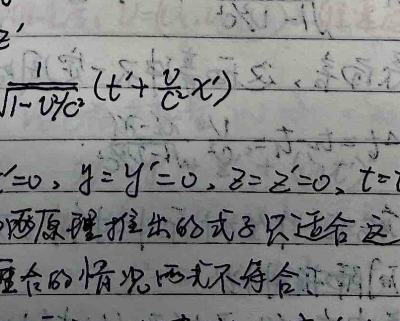
$$ \begin{cases} \frac{dx'}{dt} = a\frac{dx}{dt} + b \\ \frac{dt'}{dt} = p\frac{dx}{dt} + q \end{cases} $$ $$ \because \frac{dx'}{dt} = 0 $$ $$ \therefore dx = b \, dt, \quad dt' = q \, dt $$ $$ \therefore \frac{dx}{dt} = -\frac{b}{a} = v $$(The origin of K' moves towards the $+x$ direction in K, so $v$ is positive).
In the K' frame, the origin $O$ of the K frame satisfies:
$$ \begin{cases} \frac{dx}{dt'} = \frac{q}{aq-bp}\frac{dx'}{dt'} - \frac{b}{aq-bp} \\ \frac{dt}{dt'} = \frac{a}{aq-bp}\frac{dx'}{dt'} - \frac{p}{aq-bp} \end{cases} $$ $$ \because \frac{dx}{dt'} = 0 $$ $$ \therefore dx' = -\frac{b}{aq-bp} dt', \quad dt = \frac{a}{aq-bp} dt' $$ $$ \therefore \frac{dx'}{dt'} = -\frac{b}{a} = -v \quad \text{(The origin of K moves towards the $-x$ direction in K', so $-v$ is negative).} $$Therefore $b = -av, a = q$. Substituting into the transformation equations gives:
$$ \begin{cases} x' = ax - avt \\ t' = px + at \end{cases} $$Substitute into the spacetime interval invariance equation:
$$ x^2+y^2+z^2-c^2t^2 = (ax-avt)^2 + y^2 + z^2 - c^2(px+at)^2 $$Simplifying yields:
$$ x^2 - c^2t^2 = (a^2-c^2p^2)x^2 + (a^2v^2-a^2c^2)t^2 - (2a^2v+2apc^2)xt $$Because the coefficients of identical terms must be equal:
$$ \begin{cases} 1 = a^2 - c^2p^2 \\ -c^2 = a^2v^2 - a^2c^2 \\ 0 = 2a^2v + 2apc^2 \end{cases} \Rightarrow \begin{cases} a = \frac{1}{\sqrt{1-v^2/c^2}} \\ p = -\frac{v}{c^2}\frac{1}{\sqrt{1-v^2/c^2}} \end{cases} $$Substituting into the transformation equations, we get:
$$ \begin{cases} x' = \frac{1}{\sqrt{1-v^2/c^2}}(x-vt) \\ y' = y \\ z' = z \\ t' = \frac{1}{\sqrt{1-v^2/c^2}}\left(t-\frac{v}{c^2}x\right) \end{cases} \quad \begin{cases} x = \frac{1}{\sqrt{1-v^2/c^2}}(x'+vt') \\ y = y' \\ z = z' \\ t = \frac{1}{\sqrt{1-v^2/c^2}}\left(t'+\frac{v}{c^2}x'\right) \end{cases} $$Note: <1> Pay attention to the prerequisite of the derivation: $x=x'=0, y=y'=0, z=z'=0, t=t'=0$.
This prerequisite does not lose generality, but the equations derived from the two postulates only apply to this prerequisite.
For situations where the origins do not coincide at $t=t'=0$, they will not conform to this.
<2> Due to the homogeneity of space, all inertial frames are equivalent, only linear transformation equations can reflect this principle.
<3> The essence of the principle of the constancy of the speed of light is $(dx)^2+(dy)^2+(dz)^2-(c\,dt)^2 = (dx')^2+(dy')^2+(dz')^2-(c\,dt')^2 = ds^2 = \sqrt{(c\,d\tau)^2-(dl_0)^2}$. Because the intrinsic length $l_0$ has length, $\therefore dl_0 = 0$, $\therefore d\tau = \frac{ds}{c}$.
③ Spacetime View of Relativity
1) Relativity of Time Order and Causality.
Let events A and B occur in frame K' at locations and times $(x_1', t_1')$ and $(x_2', t_2')$.
Then in frame K, the times events A and B occur are:
$$ t_1 = \frac{t_1' + \frac{v}{c^2}x_1'}{\sqrt{1-v^2/c^2}}, \quad t_2 = \frac{t_2' + \frac{v}{c^2}x_2'}{\sqrt{1-v^2/c^2}} $$ $$ \therefore t_2 - t_1 = \frac{(t_2'-t_1') + \frac{v}{c^2}(x_2'-x_1')}{\sqrt{1-v^2/c^2}} = \frac{(t_2'-t_1')\left(1 + \frac{v}{c^2}\frac{x_2'-x_1'}{t_2'-t_1'}\right)}{\sqrt{1-v^2/c^2}} $$Timelike interval events: $\frac{x_2'-x_1'}{t_2'-t_1'} > -c$, there may be a causal relationship, and with causality the time order cannot reverse.
Spacelike interval events: $\frac{x_2'-x_1'}{t_2'-t_1'} < -c$, no causal relationship, the time order may reverse.
(If there were, it would mean superluminal causation is needed to overtake).
2) Relativity of Simultaneity:
If in frame K', two events A and B occur simultaneously at time $t'$ at locations $x_1'$ and $x_2'$. In frame K, we have:
$$ t_1 = \frac{t' + \frac{v}{c^2}x_1'}{\sqrt{1-v^2/c^2}}, \quad t_2 = \frac{t' + \frac{v}{c^2}x_2'}{\sqrt{1-v^2/c^2}} $$For frame K, these two events do not necessarily occur simultaneously. The time interval between A and B in frame K is:
$$ \Delta t = t_2 - t_1 = \frac{v}{c^2}\frac{x_2'-x_1'}{\sqrt{1-v^2/c^2}} $$Therefore, one can only synchronize clocks in one coordinate system, or synchronize clocks at two touching points in two coordinate systems.
③ Relativity of Time Intervals (Time Dilation):
If in frame K', two events A and B occur at location $x'$ at times $t_1'$ and $t_2'$. In frame K, we have:
$$ t_1 = \frac{t_1' + \frac{v}{c^2}x'}{\sqrt{1-v^2/c^2}}, \quad t_2 = \frac{t_2' + \frac{v}{c^2}x'}{\sqrt{1-v^2/c^2}} $$ $$ \therefore \Delta t = t_2 - t_1 = \frac{t_2'-t_1'}{\sqrt{1-v^2/c^2}} = \frac{\Delta t'}{\sqrt{1-v^2/c^2}} > \Delta t' $$For the same two events A and B measured in different reference frames, the time interval is shortest for the proper time (intrinsic time interval).
③ Relativity of Spatial Position (Length Contraction):
In frame K', there is a rigid ruler at rest along the $x'$ direction, with endpoints at coordinates $x_1', x_2'$. Its proper length is $L' = |x_2'-x_1'|$. In frame K, when measuring at time $t$ (clocks are synchronized differently in the moving reference frame), we have:
$$ x_1' = \frac{x_1-vt}{\sqrt{1-v^2/c^2}}, \quad x_2' = \frac{x_2-vt}{\sqrt{1-v^2/c^2}} $$ $$ \text{Thus in frame K, } L = |x_2-x_1| = |x_2'-x_1'|\sqrt{1-v^2/c^2} = L'\sqrt{1-v^2/c^2} < L' $$But in the rest frame K', $x_1'$ and $x_2'$ are measured simultaneously at time $t'$, with time difference $\Delta t' = \frac{1}{\sqrt{1-v^2/c^2}}(\Delta t - \frac{v}{c^2}\Delta x)$.
Because they are measured simultaneously at time $t$ in the moving frame K, so $\Delta t = 0$, $\therefore \Delta t' = -\frac{v/c^2}{\sqrt{1-v^2/c^2}}\Delta x = -\frac{v}{c^2}L'$.
④ Four-Vectors
[$U = (U_x, U_y, U_z, U_t)$: four-velocity; $\vec{v} = (v_x, v_y, v_z)$ three-velocity; $\vec{V}$: reference frame velocity]
1) Minkowski Space
$$ \begin{cases} x' = \gamma[x+i\beta(ict)] \\ y' = y \\ z' = z \\ ict' = \gamma[ict - i\beta x] \end{cases} $$Lorentz Invariant:
$$ x'^2 + y'^2 + z'^2 + (ict')^2 $$ $$ = \gamma^2(x-\beta ct)^2 + y^2 + z^2 + \gamma^2(-1)(ct-\beta x)^2 $$ $$ = x^2 + y^2 + z^2 + (ict)^2 = -S^2 $$2) Four-Velocity
Proper time $d\tau = \frac{ds}{c}$
Define four-velocity $U_x = \frac{dx}{d\tau}, U_y = \frac{dy}{d\tau}, U_z = \frac{dz}{d\tau}, U_t = \frac{d(ict)}{d\tau}$
$$ \therefore U_x = \frac{dx}{dt}\frac{dt}{d\tau} = \gamma \frac{dx}{dt} = \frac{v_x}{\sqrt{1-v^2/c^2}}, \quad \text{Similarly, } U_y = \frac{v_y}{\sqrt{1-v^2/c^2}}, \quad U_z = \frac{v_z}{\sqrt{1-v^2/c^2}} $$The above $v_x, v_y, v_z$ are the three-velocities of an object in frame K.
For the last component of the four-velocity, $U_t = \frac{d(ict)}{d\tau} = ic\gamma = \frac{ic}{\sqrt{1-v^2/c^2}}$.
$$ \therefore U = (U_x, U_y, U_z, U_t) = (\gamma v_x, \gamma v_y, \gamma v_z, ic\gamma) $$Since $dx, dy, dz, d(ict)$ obey the Lorentz transformation, and $d\tau$ is an invariant, therefore:
$$ \begin{cases} U_x' = \gamma (U_x + i\beta U_t) \\ U_y' = U_y \\ U_z' = U_z \\ U_t' = \gamma (U_t - i\beta U_x) \end{cases} $$Lorentz Invariant:
$$ U_x^2 + U_y^2 + U_z^2 + U_t^2 = \frac{v_x^2+v_y^2+v_z^2-c^2}{1-v^2/c^2} = \frac{v^2-c^2}{1-v^2/c^2} = -c^2 $$ $$ \therefore \gamma'v_x' = \gamma\gamma(v_x-c\beta) $$ $$ \gamma'v_y' = \gamma v_y $$ $$ \gamma'v_z' = \gamma v_z $$ $$ c\gamma' = \gamma\gamma(c-\beta v_x) $$where $\gamma_v = \frac{1}{\sqrt{1-\beta^2}}$, $\gamma = \frac{1}{\sqrt{1-(v/c)^2}}$ ($v$ is the speed in frame K), $\gamma' = \frac{1}{\sqrt{1-(v'/c)^2}}$ ($v'$ is the speed in frame K').
$$ \therefore \frac{\gamma}{\gamma'} = \frac{1}{1-\frac{\beta v_x}{c}} = \frac{1}{1-\frac{V v_x}{c^2}} \quad \text{($\beta = \frac{V}{c}$, $V$ is the relative speed of K and K')} $$Substituting this into the first three equations gives:
$$ \begin{cases} v_x' = \frac{v_x-V}{1-\frac{v_x V}{c^2}} \\ v_y' = \frac{v_y\sqrt{1-V^2/c^2}}{1-\frac{v_x V}{c^2}} \\ v_z' = \frac{v_z\sqrt{1-V^2/c^2}}{1-\frac{v_x V}{c^2}} \end{cases} $$(The velocity transformation can be directly derived by differentiating the Lorentz transformation, i.e., $dx = \frac{dx'+Vdt'}{\sqrt{1-V^2/c^2}}$, $dy=dy'$, $dz=dz'$, $dt = \frac{dt'+\frac{V}{c^2}dx'}{\sqrt{1-V^2/c^2}}$. Dividing these three equations gives the result. Just using the four-velocity to derive it is simpler and more representative.)
3) Four-Momentum
Define four-momentum $P_x = m_0 U_x, P_y = m_0 U_y, P_z = m_0 U_z, P_t = m_0 U_t$
$$ \therefore P = (P_x, P_y, P_z, P_t) = (\gamma m_0 v_x, \gamma m_0 v_y, \gamma m_0 v_z, im_0 c\gamma) $$Obviously, the four-momentum obeys the Lorentz transformation:
$$ \begin{cases} P_x' = \frac{P_x + i\beta P_t}{\sqrt{1-V^2/c^2}} = \frac{P_x - \frac{V}{c} \frac{E}{c}}{\sqrt{1-V^2/c^2}} \\ P_y' = P_y \\ P_z' = P_z \\ P_t' = \frac{P_t - i\beta P_x}{\sqrt{1-V^2/c^2}} = \frac{P_t - i\frac{V}{c} P_x}{\sqrt{1-V^2/c^2}} \end{cases} $$Lorentz Invariant:
$$ P_x^2 + P_y^2 + P_z^2 + P_t^2 = \frac{m_0^2(v_x^2+v_y^2+v_z^2-c^2)}{1-v^2/c^2} = -m_0^2 c^2 $$⑤ Relativistic Dynamics
$U = (U_x, U_y, U_z, U_t)$: four-velocity, $v = (v_x, v_y, v_z)$: three-velocity; $V$: relative velocity of reference frames.
1) Mass: $m = \frac{m_0}{\sqrt{1-v^2/c^2}}$
2) Momentum: $\vec{P} = m\vec{v} = \frac{m_0\vec{v}}{\sqrt{1-v^2/c^2}}$, Force: $\vec{F} = \frac{d\vec{P}}{dt} = \frac{d}{dt}\left(\frac{m_0\vec{v}}{\sqrt{1-v^2/c^2}}\right)$
3) Energy: $dE_k = \vec{F}\cdot d\vec{s} = \frac{d(m\vec{v})}{dt}\cdot d\vec{s} = v^2dm + mvdv$
$$ \because m^2c^2 - m_0^2c^2 = m^2v^2, \therefore 2mc^2dm = 2mv^2dm + 2v m^2 dv $$ $$ \therefore c^2dm = v^2dm + mvdv \quad \text{Substituting into the previous equation gives:} $$ $$ dE_k = c^2dm $$ $$ \therefore E_k = mc^2 - m_0c^2 $$Total energy $E = mc^2$; Power $p = \frac{dE_k}{dt} = \vec{F}\cdot\vec{v}$
And $E^2 = m_0^2c^4 + p^2c^2$.
4) Force Transformation Equations:
Define four-force: $f_x = \frac{dP_x}{d\tau}, f_y = \frac{dP_y}{d\tau}, f_z = \frac{dP_z}{d\tau}, f_t = \frac{dP_t}{d\tau}$.
$$ \begin{cases} f_x = \frac{dP_x}{dt}\frac{dt}{d\tau} = \frac{dP_x}{dt}\frac{1}{\sqrt{1-v^2/c^2}} = F_x / \sqrt{1-v^2/c^2} \\ f_y = F_y / \sqrt{1-v^2/c^2}, \quad f_z = F_z / \sqrt{1-v^2/c^2} \\ f_t = \frac{dP_t}{dt}\frac{dt}{d\tau} = \frac{d(im_0c/\sqrt{1-v^2/c^2})}{dt}\frac{1}{\sqrt{1-v^2/c^2}} = \frac{imc}{\sqrt{1-v^2/c^2}} \frac{d(mc^2)}{dt} = \frac{i\vec{F}\cdot\vec{v}}{c\sqrt{1-v^2/c^2}} \end{cases} $$ $$ \because f_x' = \frac{f_x + i\beta f_t}{\sqrt{1-V^2/c^2}} = \frac{f_x - \frac{V}{c^2} \vec{F}\cdot\vec{v}}{\sqrt{1-V^2/c^2}} $$ $$ \therefore \frac{F_x'}{\sqrt{1-v'^2/c^2}} = \frac{\frac{F_x}{\sqrt{1-v^2/c^2}} - \frac{V}{c^2}\frac{\vec{F}\cdot\vec{v}}{\sqrt{1-v^2/c^2}}}{\sqrt{1-V^2/c^2}} $$According to $\frac{\gamma}{\gamma'} = \frac{1}{1-\frac{V v_x}{c^2}}$
$$ \therefore F_x' = \frac{F_x - \frac{V}{c^2}\vec{F}\cdot\vec{v}}{1-\frac{V v_x}{c^2}} $$ $$ \because f_y' = f_y $$ $$ \therefore \frac{F_y'}{\sqrt{1-v'^2/c^2}} = \frac{F_y}{\sqrt{1-v^2/c^2}} $$ $$ \therefore F_y' = \frac{F_y\sqrt{1-V^2/c^2}}{1-\frac{V v_x}{c^2}} $$Similarly $F_z' = \frac{F_z\sqrt{1-V^2/c^2}}{1-\frac{V v_x}{c^2}}$
$$ f_t' = \frac{f_t - i\beta f_x}{\sqrt{1-V^2/c^2}} \dots $$Combining the above equations, we have ($F_x, F_y, F_z$ are the three-force components):
$$ \begin{cases} F_x' = \frac{F_x - \frac{V}{c^2}\vec{F}\cdot\vec{v}}{1-\frac{V v_x}{c^2}} \\ F_y' = \frac{F_y\sqrt{1-V^2/c^2}}{1-\frac{V v_x}{c^2}} \\ F_z' = \frac{F_z\sqrt{1-V^2/c^2}}{1-\frac{V v_x}{c^2}} \end{cases} $$Application Example: Origin of the Magnetic Field:
A charged parallel plate capacitor moves with velocity $\vec{v}_0 = v_0\vec{i}$ in frame S. There is a charge $q$ between the plates moving with velocity $\vec{v} = v_x\vec{i} + v_y\vec{j} + v_z\vec{k}$. The plates are at rest in frame S'. In frame S', $q$ moves with velocity $\vec{v}' = v_x'\vec{i} + v_y'\vec{j} + v_z'\vec{k}$.
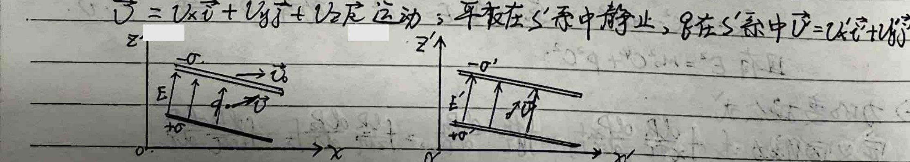
In frame S': $F_x' = qE_x' = q(\frac{\sigma}{\epsilon_0})_x = qE_x$
$$ F_y' = qE_y' = q(\frac{\sigma}{\epsilon_0})_y = q(\frac{\sigma_0}{\epsilon_0\sqrt{1-v_0^2/c^2}})_y = \frac{qE_y}{\sqrt{1-v_0^2/c^2}} $$ $$ F_z' = qE_z' = q(\frac{\sigma}{\epsilon_0})_z = q(\frac{\sigma_0}{\epsilon_0\sqrt{1-v_0^2/c^2}})_z = \frac{qE_z}{\sqrt{1-v_0^2/c^2}} $$ $$ v_x' = \frac{v_x - v_0}{1 - \frac{v_0 v_x}{c^2}} $$ $$ v_y' = \frac{v_y\sqrt{1-v_0^2/c^2}}{1 - \frac{v_0 v_x}{c^2}} $$ $$ v_z' = \frac{v_z\sqrt{1-v_0^2/c^2}}{1 - \frac{v_0 v_x}{c^2}} $$According to the force transformation equations, in frame S:
$$ F_x = \frac{F_x' + \frac{v_0}{c^2}(F_x'v_x' + F_y'v_y' + F_z'v_z')}{1 + \frac{v_0 v_x'}{c^2}} = \frac{qE_x + \frac{v_0}{c^2}\left[qE_x\frac{v_x-v_0}{1-\frac{v_0 v_x}{c^2}} + \left(\frac{qE_y v_y}{1-\frac{v_0 v_x}{c^2}} + \frac{qE_z v_z}{1-\frac{v_0 v_x}{c^2}}\right)(1-\frac{v_0^2}{c^2})\right]}{1 + \frac{v_0(v_x-v_0)}{c^2-v_0 v_x}} $$ $$ = qE_x + q(E_y v_y + E_z v_z)\frac{v_0}{c^2} $$ $$ F_y = \frac{qE_y \sqrt{1-v_0^2/c^2}\sqrt{1-v_0^2/c^2}}{1 + \frac{v_0(v_x-v_0)}{c^2-v_0 v_x}} = qE_y - \frac{qv_0 v_x E_y}{c^2} $$ $$ F_z = qE_z - \frac{qv_0 v_x E_z}{c^2} $$Define $\vec{B} = \frac{1}{c^2}\vec{v}_0 \times \vec{E}$.
$$ \therefore \vec{F} = F_x\vec{i} + F_y\vec{j} + F_z\vec{k} = q(E_x\vec{i} + E_y\vec{j} + E_z\vec{k}) + q\vec{v} \times \vec{B} = q\vec{E} + q\vec{v} \times \vec{B} $$⑥ Nuclear Reactions and Particle Reactions
1) Atomic Nucleus: $M = N + Z$ ($M$: mass number, $N$: number of neutrons, $Z$: number of protons)
$$ \begin{cases} \alpha \text{ decay: } {}^M_Z X \to {}^{M-4}_{Z-2} Y + {}^4_2 He \text{ (emits } \alpha \text{ particle)} \\ \beta \text{ decay: } {}^M_Z X \to {}^M_{Z+1} Y + {}^{0}_{-1} e \text{ (emits } \beta \text{ particle)} \end{cases} \text{ (emit particles)} $$$N = N_0 e^{-\lambda t}$, half-life $T$: $N = \frac{N_0}{2}$, $\therefore e^{-\lambda T} = \frac{1}{2}$, $T = \frac{\ln 2}{\lambda}$
$$ \therefore N = N_0 e^{t(-\frac{\ln 2}{T})} = N_0 (e^{\ln\frac{1}{2}})^{\frac{t}{T}} = N_0 \left(\frac{1}{2}\right)^{\frac{t}{T}} $$ $$ \begin{cases} \text{Discovery of proton: } {}^{14}_7 N + {}^4_2 He \to {}^{17}_8 O + {}^1_1 H \\ \text{Discovery of neutron: } {}^9_4 Be + {}^4_2 He \to {}^{12}_6 C + {}^1_0 n \\ \text{Discovery of positron: } {}^{30}_{15} P \to {}^{30}_{14} Si + {}^{0}_{1} e \\ \text{Nuclear fission: } {}^{235}_{92} U + {}^1_0 n \to {}^{144}_{56} Ba + {}^{89}_{36} Kr + 3 {}^1_0 n \\ \text{Nuclear fusion: } {}^2_1 H + {}^3_1 H \to {}^4_2 He + {}^1_0 n \end{cases} $$2) Two-body decay: $A \to A_1 + A_2$
$$ \begin{cases} P_1 = P_2 \\ m_0 c^2 = \sqrt{P_1^2 c^2 + m_{10}^2 c^4} + \sqrt{P_2^2 c^2 + m_{20}^2 c^4} \end{cases} $$Solving yields $P_1 = P_2 = \frac{c}{2m_0}\sqrt{[m_0^2-(m_{10}+m_{20})^2][m_0^2-(m_{10}-m_{20})^2]}$
$$ \begin{cases} E_1 = \sqrt{P_1^2 c^2 + m_{10}^2 c^4} = \frac{m_0^2+m_{10}^2-m_{20}^2}{2m_0} c^2 \\ E_2 = \sqrt{P_2^2 c^2 + m_{20}^2 c^4} = \frac{m_0^2+m_{20}^2-m_{10}^2}{2m_0} c^2 \end{cases} $$3) Two-body reaction threshold energy.
$$ A_1 + A_2 \to A_3 + A_4 + A_5 \dots $$In the center-of-momentum frame (CM frame: relatively centered, the CM frame generally does not coincide with the center-of-mass frame):
<1> $P_1' = P_2'$
<2> $P_1' = \gamma (P_1 - \beta \frac{E_1}{c})$ (high-energy particle 1)
<3> $E_1' = \gamma (E_1 - \beta P_1 c)$
<4> $P_2' = \gamma \beta m_{20} c$ (target particle 2, at rest in the laboratory frame)
<5> $E_2' = \gamma m_{20} c^2$
(From the last equation of the four-momentum transformation, we have $E' = (E-VP_x)/\sqrt{1-V^2/c^2}$.)
From <1>, <2>, <4> solving gives $\beta = \frac{P_1 c}{E_1 + m_{20} c^2}$.
$$ \therefore E_1' + E_2' = \gamma (E_1 - \beta P_1 c + m_{20} c^2) = \frac{1}{\sqrt{1-\beta^2}} \left(E_1 - \frac{P_1 c^2}{E_1 + m_{20} c^2} + m_{20} c^2\right) $$ $$ = \frac{1}{\sqrt{1 - \frac{E_1^2 - m_{10}^2 c^4}{(E_1 + m_{20} c^2)^2}}} \left(E_1 - \frac{E_1^2 - m_{10}^2 c^4}{E_1 + m_{20} c^2} + m_{20} c^2\right) $$ $$ = \sqrt{m_{10}^2 c^4 + m_{20}^2 c^4 + 2E_1 m_{20} c^2} $$This is the expression for the total energy $E'$ in the CM frame. In the CM frame, this part of the energy can be completely converted into the rest mass energy of the products, i.e., after the reaction, all products are at rest in the CM frame, with no kinetic energy. Therefore, this energy $E'$ is also called the available reaction energy.
When this threshold reaction occurs, the energy threshold of the incident particle $m_{10}$ is $E_{th}$, and its kinetic energy is $E_{k_{th}}$.
$$ \therefore \sqrt{m_{10}^2 c^4 + m_{20}^2 c^4 + 2E_{th} m_{20} c^2} = \sum_{i=3}^n m_i c^2 \text{ (Rest mass energy of all products after reaction)} $$Solving yields $E_{th} = \frac{(\sum m_i c^2)^2 - (m_{10}^2 c^4 + m_{20}^2 c^4)}{2m_{20} c^2}$
$$ \therefore E_{k_{th}} = E_{th} - m_{10} c^2 = \frac{(\sum m_i c^2)^2 - (m_{10} c^2 + m_{20} c^2)^2}{2m_{20} c^2} = \frac{(\sum m_i + m_{10} + m_{20})(\sum m_i - m_{10} - m_{20})c^2}{2m_{20}} $$ $$ = \left[-(m_{10}+m_{20}-\sum m_i)c^2\right] \frac{\sum m_i}{2m_{20}} \quad [Q = (m_{10}+m_{20}-\sum m_i)c^2 \text{ Reaction Energy}] $$⑦ Doppler Effect
Assume the light source is at rest in frame K, and the observer is at rest in frame K'. Frame K' moves with velocity $V$ along the positive x-axis of frame K. Let the angle between the light ray from the source to the observer and the x'-axis in frame K' be $\theta'$.
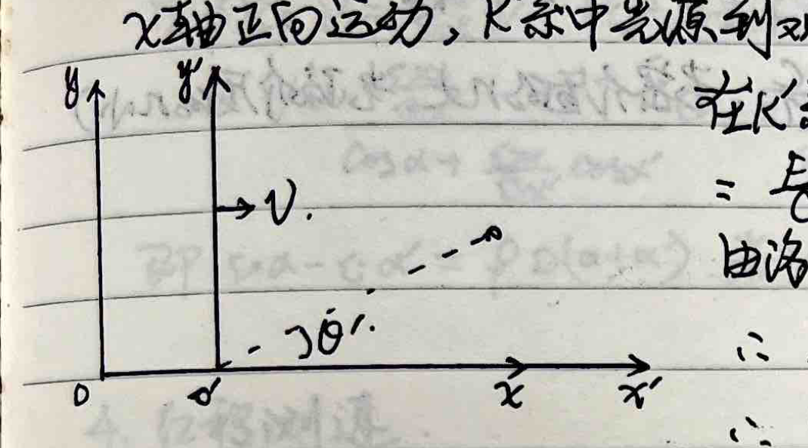
In frame K, the component of the photon along the x'-axis is $P_x' = P'\cos\theta' = \frac{E'}{c}\cos\theta' = \frac{h\nu'}{c}\cos\theta'$
From the Lorentz transformation $E = \frac{1}{\sqrt{1-\beta^2}}(E' - \beta c P_x')$
$$ \therefore h\nu = \frac{1}{\sqrt{1-\beta^2}}(h\nu' - h\nu'\beta\cos\theta') $$ $$ \therefore \nu' = \nu \frac{\sqrt{1-\beta^2}}{1 - \beta\cos\theta'} $$ $$ \begin{cases} \text{When } \theta' = 0 \text{ (approaching), } \nu' = \nu \sqrt{\frac{1+\beta}{1-\beta}} \approx \nu(1+\beta) \\ \text{When } \theta' = \frac{\pi}{2} \text{ (transverse), } \nu' = \nu \sqrt{1-\beta^2} \approx \nu(1-\frac{1}{2}\beta^2) \end{cases} $$Special Topic: Acceleration Equivalent to Gravitational Field Problem
Problem: A thought experiment inside a box undergoing uniform accelerated linear motion with acceleration $a$. A laser emitter and a laser receiver are installed at the bottom and top of the box, respectively. The distance between them in the box frame is $L$, and the period of laser emission from the emitter to the receiver is $T_0$. Prove that in the ground reference frame, the period $T$ of the laser received by the receiver at the top of the box is $T = T_0 \left(1 + \frac{aL}{c^2}\right)$.
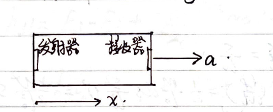
Proof:
Let at $t=0$, the box starts accelerating from rest, and simultaneously the laser light wave is emitted from the emitter.
At any time $t$:
$$ \begin{cases} \text{Emitter position: } x = \frac{1}{2} a t^2 \\ \text{Receiver position: } x = L + \frac{1}{2} a t^2 \end{cases} $$ $$ \begin{cases} \text{Vibration state position of the examined wave: } x = ct \\ \text{Vibration state position one period } T_0 \text{ later: } x = \frac{1}{2} a T_0^2 + c(t - T_0) \end{cases} $$Let the examined vibration state reach the receiver at time $t_1$.
$$ ct_1 = L + \frac{1}{2} a t_1^2 \implies t_1 = \frac{c}{a}\left(1 - \sqrt{1 - \frac{2aL}{c^2}}\right) $$Let the vibration state exactly one period $T_0$ later reach the receiver at time $t_2$.
$$ \frac{1}{2} a T_0^2 + c(t_2 - T_0) = L + \frac{1}{2} a t_2^2 \implies t_2 = \frac{c}{a}\left(1 - \sqrt{1 - \frac{2aL}{c^2} - \frac{2aT_0}{c} + \frac{a^2 T_0^2}{c^2}}\right) $$Therefore, the received laser period in the ground frame is:
$$ T = t_2 - t_1 $$ $$ = \frac{c}{a} \sqrt{1 - \frac{2aL}{c^2}} - \frac{c}{a} \sqrt{1 - \frac{2aL}{c^2} - \frac{2aT_0}{c} + \frac{a^2 T_0^2}{c^2}} $$ $$ = \frac{c}{a} \sqrt{1 - \frac{2aL}{c^2}} \left[ 1 - \sqrt{1 - \frac{\frac{2aT_0}{c} - \frac{a^2 T_0^2}{c^2}}{1 - \frac{2aL}{c^2}}} \right] $$Using the Taylor expansion approximation $\sqrt{1-x} \approx 1 - \frac{1}{2}x$:
$$ T \approx \frac{c}{a}\left(1 - \frac{aL}{c^2}\right) \left[ 1 - \left(1 - \frac{\frac{aT_0}{c} - \frac{a^2 T_0^2}{2c^2}}{1 - \frac{2aL}{c^2}}\right) \right] $$ $$ \approx \frac{c}{a}\left(1 - \frac{aL}{c^2}\right) \left( \frac{aT_0}{c} - \frac{a^2 T_0^2}{2c^2} \right) \left(1 + \frac{2aL}{c^2}\right) $$ $$ = \left(1 - \frac{aL}{c^2}\right)\left(1 + \frac{2aL}{c^2}\right)\left(T_0 - \frac{aT_0^2}{2c}\right) $$ $$ \approx \left(1 + \frac{2aL}{c^2} - \frac{aL}{c^2}\right) T_0 \left(1 - \frac{aT_0}{2c}\right) \quad \text{The } \frac{aT_0}{c} \text{ term is relatively negligible.} $$ $$ \approx T_0 \left(1 + \frac{aL}{c^2}\right) $$Since $a$ can be equivalent to gravitational field strength $g$, we get $T = T_0 \left(1 + \frac{gL}{c^2}\right)$.
Special Topic: Spring Oscillator with Massive Spring
1. Spring oscillator with massive spring
The central point mass of the spring oscillator is $M$, the spring mass is $m$, the stiffness coefficient is $k$, the oscillation period of the system is:
$$ T = 2\pi \sqrt{\frac{M + m/3}{k}} $$Proof: When the spring is at its original length $l_0$, take a line element $ds$ at coordinate $s$. Its mass is $dm = \frac{m}{l_0} ds$.
When $M$ undergoes displacement $x$, let the displacement of $dm$ be $p$. Due to the uniform distribution of the spring's mass, $\frac{p}{x} = \frac{s}{l_0}$.
Taking the derivative of the above with respect to time:
$$ \frac{dp}{dt} = \frac{s}{l_0} \frac{dx}{dt} = \frac{s}{l_0} v $$$\therefore$ The kinetic energy of $dm$ is $dE_k = \frac{1}{2} dm \left(\frac{dp}{dt}\right)^2 = \frac{1}{2} \frac{m}{l_0} ds \frac{s^2}{l_0^2} v^2 = \frac{mv^2}{2l_0^3} s^2 ds$
$\therefore$ The kinetic energy of the entire spring is $E_{k1} = \frac{mv^2}{2l_0^3} \int_0^{l_0} s^2 ds = \frac{1}{6} m v^2$
And the kinetic energy of the small ball is $E_{k2} = \frac{1}{2} M v^2$.
$\therefore$ The mechanical energy of the system is $E = \frac{1}{2}\left(M + \frac{m}{3}\right)\left(\frac{dx}{dt}\right)^2 + \frac{1}{2} k x^2$.
Taking the derivative with respect to time $t$:
$$ \frac{dE}{dt} = \frac{1}{2}\left(M + \frac{m}{3}\right) \cdot 2 \left(\frac{dx}{dt}\right) \frac{d}{dt}\left(\frac{dx}{dt}\right) + \frac{1}{2} k \cdot 2x \frac{dx}{dt} = 0 $$ $$ \therefore \frac{d^2 x}{dt^2} + \frac{k}{M + m/3} x = 0 $$ $$ \therefore T = 2\pi \sqrt{\frac{M + m/3}{k}} $$2. Simple pendulum with massive string
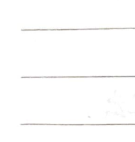
Special Topic: Threshold Energy in Two-Body Reactions
1. Model: $A_1 + A_2 \to A_3 + A_4 + A_5 \dots$
In the laboratory frame (L-frame): $A_1$ is the high-energy particle, with momentum $P_1$, and energy $E_1 = m_1 c^2$. $A_2$ is the target particle, with momentum 0, and energy $E_2 = m_{20} c^2$.
In the center-of-momentum frame (C-frame): Let the relative velocity of the C-frame to the L-frame be $V$, $\beta = \frac{V}{c}$, $\gamma = \frac{1}{\sqrt{1-\beta^2}}$.
Define the four-momentum $P = m_0 U$, where $U$ is the four-velocity, and its magnitude squared is $-c^2$.
Define the three-momentum $p = m v$, since $m = \gamma m_0, v = \frac{dx}{dt}$, the spatial components of the four-momentum correspond to the three-momentum. From the Lorentz transformation:
$$ \begin{cases} P_1' = \gamma (P_1 - \beta m_1 c) \\ P_2' = \gamma (P_2 - \beta m_2 c) \end{cases} $$$\because P_2 = 0, m_2 = m_{20} \implies P_2' = -\gamma \beta m_{20} c$.
2. Process: In threshold reactions, the high-energy particle has a threshold energy in the L-frame, allowing the reaction to just occur. At this time, the total energy of the generated particles after the collision in the L-frame is minimum.
Let $P_3, P_4, P_5 \dots$ be the momenta of the generated particles in the L-frame. Assume $P_i < P_{i+1}$ ($i \ge 3$).
If we increase $P_i$ by $\Delta P$ and decrease $P_{i+1}$ by $\Delta P$ ($\Delta P < P_{i+1} - P_i$), the total momentum remains unchanged. The change in total kinetic energy is roughly proportional to $c^2[(P_i + \Delta P)^2 - P_i^2] - c^2[P_{i+1}^2 - (P_{i+1} - \Delta P)^2]$:
$$ = c^2[2\Delta P (P_i - P_{i+1} + \Delta P)] < 0 $$$\therefore P_i \ne P_{i+1}$ does not correspond to the minimum total energy. $\therefore$ All products in the L-frame must have equal momentum, i.e., $P_3 = P_4 = P_5 = \dots$
Let $P_3', P_4', P_5' \dots$ be the momenta of the generated particles in the C-frame.
Since $P_i' = \gamma(P_i - \beta m_i c)$, and $\sum P_i' = 0$,
$$ \therefore \sum P_i - \beta c \sum m_i = 0 $$Also $\sum P_i = P_1 + P_2 = P_1$, $\sum m_i c^2 = m_1 c^2 + m_{20} c^2$.
$$ \therefore P_1 = \beta c (m_1 + m_{20}) $$ $$ P_i = \frac{1}{n} P_1 = \frac{\beta c}{n} (m_1 + m_{20}) $$ $$ E_1^2 = m_{10}^2 c^4 + P_1^2 c^2 = m_{10}^2 c^4 + (\beta c)^2 (m_1 + m_{20})^2 $$3. Essence:
From the last term of the four-momentum transformation: $P_t' = \frac{P_t - v \beta P_x}{\sqrt{1 - V^2/c^2}} = \gamma (P_t - v \beta P_x)$.
Since $P_t = im_0 c \gamma, P_t' = im_0 c \gamma'$, we get:
$$ E' = \gamma (E - \beta c P_x) $$Let $E_1, E_2$ be the energies of $A_1, A_2$ in the L-frame, $E_1', E_2'$ be the energies of $A_1, A_2$ in the C-frame.
$$ \therefore \begin{cases} E_1' = \gamma(E_1 - \beta c P_1) \\ E_2' = \gamma(m_{20} c^2 - \beta c \cdot 0) = \gamma m_{20} c^2 \end{cases} $$$\therefore$ Total energy in the C-frame $E' = E_1' + E_2' = \gamma(E_1 - \beta c P_1 + m_{20} c^2)$.
From previously, $\beta = \frac{P_1 c}{E_1 + m_{20} c^2}$, substituting into the above gives:
$$ E' = \frac{1}{\sqrt{1-\beta^2}} \left(E_1 - \frac{P_1 c}{E_1 + m_{20} c^2} P_1 c + m_{20} c^2\right) $$ $$ = \frac{1}{\sqrt{1 - \left(\frac{P_1 c}{E_1 + m_{20} c^2}\right)^2}} \frac{(E_1 + m_{20} c^2)^2 - (P_1 c)^2}{E_1 + m_{20} c^2} $$ $$ = \sqrt{(E_1 + m_{20} c^2)^2 - (P_1 c)^2} = \sqrt{E_1^2 - P_1^2 c^2 + m_{20}^2 c^4 + 2E_1 m_{20} c^2} $$ $$ = \sqrt{m_{10}^2 c^4 + m_{20}^2 c^4 + 2E_1 m_{20} c^2} $$Because the total energy in the C-frame remains unchanged after the reaction, and after the threshold reaction only the rest mass energy of the products remains in the C-frame (requirement for threshold reaction), we have:
$$ \sqrt{m_{10}^2 c^4 + m_{20}^2 c^4 + 2E_1 m_{20} c^2} = \sum m_{i0} c^2 $$ $$ \therefore E_1 = \frac{\left(\sum m_{i0} c^2\right)^2 - \left[(m_{10} c^2)^2 + (m_{20} c^2)^2\right]}{2 m_{20} c^2} $$4. Q-value and Threshold Kinetic Energy:
In the process of particle decay or particle reaction, the difference between the total kinetic energy of the particles before and after the process is the Q-value of the process.
$$ Q = E_{kt} - E_{k0} = \left(\sum_{\text{after}} m_i c^2 - \sum_{\text{after}} m_{i0} c^2\right) - \left(\sum_{\text{before}} m_j c^2 - \sum_{\text{before}} m_{j0} c^2\right) $$ $$ = \left(\sum_{\text{before}} m_{j0} - \sum_{\text{after}} m_{i0}\right) c^2 $$This is equal to the difference in total rest mass energy before and after the reaction. For a threshold reaction:
$$ E_{k1} = E_1 - m_{10} c^2 = \frac{\left(\sum m_{i0} c^2\right)^2 - \left[(m_{10} c^2)^2 + (m_{20} c^2)^2 + 2m_{10} m_{20} c^4\right]}{2m_{20} c^2} $$ $$ = \frac{\left(\sum m_{i0} c^2\right)^2 - \left(\sum_{\text{before}} m_{0} c^2\right)^2}{2m_{20} c^2} $$ $$ = \frac{\left(\sum m_{i0} c^2 + \sum_{\text{before}} m_{0} c^2\right)\left(\sum m_{i0} c^2 - \sum_{\text{before}} m_{0} c^2\right)}{2 m_{20} c^2} = -Q \frac{\sum m_{i0} c^2 + \sum_{\text{before}} m_{0} c^2}{2 m_{20} c^2} $$5. Center-of-mass frame and Center-of-momentum frame:
Center-of-mass frame definition: $\sum m_i \vec{r}_i = 0$.
Center-of-momentum frame definition: $\sum m_i \vec{v}_i = 0$.
$\because \frac{d}{dt} \left(\sum m_i \vec{r}_i\right) \ne \sum m_i \vec{v}_i$ (since $m_i$ is relativistic mass, which depends on velocity and time if particles interact or decay).
$\therefore$ The center-of-mass frame and the center-of-momentum frame do not coincide.
In threshold reactions, in the C-frame, we can specifically solve for the values of $P_1', P_2', E_1', E_2', E_i'$.
① $\because P_1' + P_2' = 0$, and $P_2' = -\gamma \beta m_{20} c \implies P_1' = \gamma \beta m_{20} c$
$$ = \frac{\beta}{\sqrt{1-\beta^2}} m_{20} c = \frac{\frac{P_1 c}{E_1 + m_{20} c^2}}{\sqrt{1 - \left(\frac{P_1 c}{E_1 + m_{20} c^2}\right)^2}} m_{20} c = \frac{P_1 c}{\sqrt{(E_1 + m_{20} c^2)^2 - (P_1 c)^2}} m_{20} c $$ $$ = \frac{\sqrt{E_1^2 - m_{10}^2 c^4}}{\sum m_{i0} c^2} m_{20} c $$② And $P_1' = \frac{\sqrt{E_1'^2 - m_{10}^2 c^4}}{c} \dots$
③ From the invariance of the squared four-momentum:
$$ P_1^2 + P_t^2 = P_1'^2 + P_t'^2 $$ $$ \text{i.e., } \left(\frac{1}{c}P_1\right)^2 - (m_1 c)^2 = P_1'^2 - (m_{10} c)^2 = -m_{10}^2 c^2 $$ $$ \therefore P_1' = 0 \quad \text{(in C-frame for the products)} $$ $$ \therefore E_0 = \sqrt{\left(\frac{1}{c}P_1\right)^2 + (m_{20} c^2)^2} $$ $$ \text{and } E_1' = \sqrt{m_{10}^2 c^4 + P_1'^2 c^2} = m_{10} c^2 $$Special Topic: Michelson-Morley Experiment
1. Light path, interference principle:
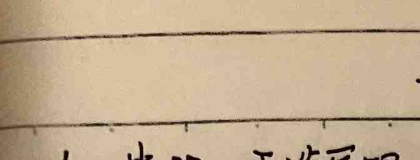
If the two arms are purely under conditions without an "ether wind", the apparatus can produce equal-thickness interference fringes caused by $G$.
2. Null result:
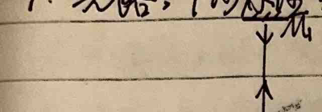
If there is an "ether wind", light in paths $GM_1$ and $GM_2$ will have an extra phase difference due to different propagation times, thereby causing the interference fringes to shift.
The time taken for light to make a round trip on the arm $GM_2$ parallel to $v$:
$$ t_1 = \frac{L}{c-v} + \frac{L}{c+v} = \frac{L(c+v+c-v)}{c^2-v^2} = \frac{2L}{c} \frac{1}{1-v^2/c^2} \approx \frac{2L}{c}\left(1+\frac{v^2}{c^2}\right) $$The actual path of light traveling on the arm $GM_1$ perpendicular to $v$ is $GM_1'G'$. Let the time taken for $G \to M_1'$ be $t_0$, then
$$ (c \cdot t_0)^2 = L^2 + (v \cdot t_0)^2 \implies t_0 = \frac{L}{\sqrt{c^2-v^2}} $$ $$ \therefore t_2 = 2t_0 = \frac{2L}{\sqrt{c^2-v^2}} \approx \frac{2L}{c}\left(1+\frac{v^2}{2c^2}\right) $$From the expressions for $t_1$ and $t_2$, we get the additional path difference:
$$ \delta' = c(t_1 - t_2) = L \cdot \frac{v^2}{c^2} $$If the whole apparatus is rotated by $90^\circ$, the change in path difference is twice the above value, which is $\frac{2L v^2}{c^2}$, causing the total number of shifted fringes to be:
$$ x = \frac{2L v^2/c^2}{\lambda} $$From the experiment, $x = 0$, thus refuting the existence of the "ether wind"!
Special Topic: Damped Oscillation, Forced Oscillation, Resonance (Solving a Class of Differential Equations)
1. Damped Oscillation
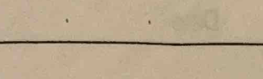
Restoring force $\vec{F} = -k\vec{x}$, Damping force $\vec{F}' = -\gamma\vec{v} = -\gamma\frac{d\vec{x}}{dt}$.
$$ \therefore m\frac{d^2\vec{x}}{dt^2} + k\vec{x} + \gamma\frac{d\vec{x}}{dt} = 0 $$Let $2\beta = \frac{\gamma}{m}$ and $\omega_0^2 = \frac{k}{m}$,
$$ \therefore \frac{d^2x}{dt^2} + 2\beta\frac{dx}{dt} + \omega_0^2 x = 0 \quad \text{①} $$We can write equation ① as $r\frac{d}{dt}\left(\frac{dx}{dt} + qx\right) + p\left(\frac{dx}{dt} + qx\right) = 0$, where $p, q, r$ are undetermined coefficients.
$$ \therefore r\frac{d^2x}{dt^2} + (p + qr)\frac{dx}{dt} + pq x = 0 $$Equating coefficients with ① gives:
$$ \begin{cases} r = 1 \\ p + qr = 2\beta \\ pq = \omega_0^2 \end{cases} $$Since $r = 1$ and $q = \frac{\omega_0^2}{p}$:
$$ \therefore p + \frac{\omega_0^2}{p} = 2\beta \implies p^2 - 2\beta p + \omega_0^2 = 0 \implies p = \frac{2\beta \pm \sqrt{4\beta^2 - 4\omega_0^2}}{2} = \beta \pm \sqrt{\beta^2 - \omega_0^2} $$ $$ \therefore q = 2\beta - p = 2\beta - (\beta \pm \sqrt{\beta^2 - \omega_0^2}) = \beta \mp \sqrt{\beta^2 - \omega_0^2} $$ $$ \therefore \begin{cases} r = 1 \\ p = \beta \pm \sqrt{\beta^2 - \omega_0^2} \\ q = \beta \mp \sqrt{\beta^2 - \omega_0^2} \end{cases} \quad \text{②} $$Substituting into the factorized equation, we have $d\left(\frac{dx}{dt} + qx\right) = -p\left(\frac{dx}{dt} + qx\right)dt$. Also, at $t=0$, $\frac{dx}{dt} = 0, x = A_0$ (assuming release from rest at $A_0$).
$$ \therefore \ln\left(\frac{dx}{dt} + qx\right) \Big|_{qA_0} = -pt \implies \frac{dx}{dt} + qx = qA_0 e^{-pt} \quad \text{③} $$For a first-order linear differential equation of the form $\frac{dx}{dt} + q(t)x = P(t)$, the solution method via an integrating factor states that since $x$ is a function of $t$, it can be represented as $x = c(t)e^{-\int q(t)dt}$ ④.
Substitute ④ into the original differential equation $\frac{dx}{dt} + q(t)x = P(t)$:
$$ \frac{dc(t)}{dt} e^{-\int q(t)dt} + c(t) \frac{d}{dt}\left(e^{-\int q(t)dt}\right) + q(t) c(t) e^{-\int q(t)dt} = P(t) $$ $$ \because c(t) \frac{d}{dt}\left(e^{-\int q(t)dt}\right) = -q(t) c(t) e^{-\int q(t)dt} $$Therefore, the original equation becomes $\frac{dc(t)}{dt} e^{-\int q(t)dt} = P(t)$.
$$ \therefore c(t) = \int P(t) e^{\int q(t)dt} dt + C_2 \quad \text{⑤} $$Compare equation ③ with the differential equation $\frac{dx}{dt} + q(t)x = P(t)$, we get $q(t) = q$ and $P(t) = qA_0 e^{-pt}$. Substituting into ⑤ gives:
$$ c(t) = \int q A_0 e^{-pt} e^{qt} dt + C_2 = q A_0 \int e^{(q-p)t} dt + C_2 = \frac{q A_0}{q-p} e^{(q-p)t} + C_2 $$Combining ③, ④, and ⑤ gives:
$$ x = e^{-qt} \left[ \frac{q A_0}{q-p} e^{(q-p)t} + C_2 \right] = \frac{q A_0}{q-p} e^{-pt} + C_2 e^{-qt} $$Substitute the initial conditions ($t=0, x=A_0$): $A_0 = \frac{q A_0}{q-p} + C_2 \implies C_2 = -\frac{p A_0}{q-p}$.
$$ \therefore x = \frac{q A_0}{q-p} e^{-pt} - \frac{p A_0}{q-p} e^{-qt} \quad \text{⑦} $$Substitute ② into ⑦, we get the general solution:
$$ x = \frac{\beta \mp \sqrt{\beta^2-\omega_0^2}}{\mp 2\sqrt{\beta^2-\omega_0^2}} A_0 e^{-(\beta \pm \sqrt{\beta^2-\omega_0^2})t} + \frac{-(\beta \pm \sqrt{\beta^2-\omega_0^2})}{\mp 2\sqrt{\beta^2-\omega_0^2}} A_0 e^{-(\beta \mp \sqrt{\beta^2-\omega_0^2})t} \quad \text{⑧} $$Underdamped Oscillation ($\beta^2 - \omega_0^2 < 0$)
Then $\sqrt{\beta^2-\omega_0^2} = i\sqrt{\omega_0^2-\beta^2} = i\omega_r$.
$$ \therefore x = \frac{A_0}{2} e^{-\beta t} \left( \frac{\omega_r \pm i\beta}{\omega_r} e^{\mp i\omega_r t} + \frac{\omega_r \mp i\beta}{\omega_r} e^{\pm i\omega_r t} \right) $$Since $\frac{\omega_r \pm i\beta}{\omega_r} = 1 \pm i\frac{\beta}{\omega_r} = A(\cos\theta \pm i\sin\theta)$, we can deduce $\tan\theta = \frac{\beta}{\omega_r}$ and $A = \frac{\sqrt{\beta^2+\omega_r^2}}{\omega_r} = \frac{\omega_0}{\omega_r}$.
$$ \therefore \frac{\omega_r \pm i\beta}{\omega_r} = \frac{\omega_0}{\omega_r} e^{\pm i \arctan(\beta/\omega_r)} \quad \text{⑨} $$Substitute ⑨ back into $x(t)$:
$$ x = \frac{A_0}{2} e^{-\beta t} \frac{\omega_0}{\omega_r} \left[ e^{\mp i(\omega_r t - \arctan(\beta/\omega_r))} + e^{\pm i(\omega_r t - \arctan(\beta/\omega_r))} \right] $$Using Euler's formula, the imaginary sine parts cancel out, leaving the cosine parts:
$$ x = A_0 e^{-\beta t} \frac{\omega_0}{\omega_r} \cos\left(\omega_r t - \arctan\frac{\beta}{\omega_r}\right) \quad \text{⑩} $$Overdamped Oscillation ($\beta^2 - \omega_0^2 > 0$)
From ⑧, let $\beta_r = \sqrt{\beta^2-\omega_0^2}$:
$$ x = \frac{\beta \mp \beta_r}{\mp 2\beta_r} A_0 e^{-(\beta \pm \beta_r)t} + \frac{-(\beta \pm \beta_r)}{\mp 2\beta_r} A_0 e^{-(\beta \mp \beta_r)t} \quad \text{⑪} $$Critically Damped Oscillation ($\beta^2 - \omega_0^2 = 0$)
From ③, we get $\frac{dx}{dt} + \beta x = \beta A_0 e^{-\beta t}$. Using the integrating factor approach directly:
$$ x = e^{-\int \beta dt} \left( \beta A_0 \int e^{-\beta t} e^{\beta t} dt + C_3 \right) = e^{-\beta t} (\beta A_0 t + C_3) $$Substitute $t=0, x=A_0 \implies C_3 = A_0$.
$$ \therefore x = A_0 (1 + \beta t) e^{-\beta t} \quad \text{⑫} $$2. Forced Oscillation and Resonance
Restoring force $\vec{F} = -k\vec{x}$, Damping force $\vec{F}' = -\gamma\vec{v} = -\gamma\frac{d\vec{x}}{dt}$, Driving force $\vec{F}_{\text{ext}} = \vec{F}_0 \cos\omega t$.
$$ \therefore m\frac{d^2\vec{x}}{dt^2} + k\vec{x} + \gamma\frac{d\vec{x}}{dt} = \vec{F}_0 \cos\omega t $$ $$ \text{i.e., } \frac{d^2x}{dt^2} + 2\beta\frac{dx}{dt} + \omega_0^2 x = \frac{F_0}{m} \cos\omega t $$From the factorized conclusion earlier, we have $p\left(\frac{dx}{dt} + qx\right) + \frac{d}{dt}\left(\frac{dx}{dt} + qx\right) = \frac{F_0}{m} \cos\omega t$, where $p = \beta \pm \sqrt{\beta^2-\omega_0^2}$ and $q = \beta \mp \sqrt{\beta^2-\omega_0^2}$.
Let $y = \frac{dx}{dt} + qx \implies py + \frac{dy}{dt} = \frac{F_0}{m} \cos\omega t \quad \text{⑬}$.
From the integrating factor solution ⑤, we get:
$$ y = e^{-pt} \left[ \int e^{pt} \frac{F_0}{m} \cos\omega t dt + C_6 \right] = e^{-pt} \left[ \frac{F_0}{2m} \int e^{pt} (e^{i\omega t} + e^{-i\omega t}) dt + C_6 \right] $$ $$ = e^{-pt} \left[ \frac{F_0}{2m} \left( \frac{1}{p+i\omega} e^{(p+i\omega)t} + \frac{1}{p-i\omega} e^{(p-i\omega)t} \right) + C_6 \right] $$ $$ = \frac{F_0}{2m} \frac{e^{i\omega t}}{p+i\omega} + \frac{F_0}{2m} \frac{e^{-i\omega t}}{p-i\omega} + C_6 e^{-pt} $$ $$ = \frac{F_0}{2m\sqrt{p^2+\omega^2}} \left[ e^{i(\omega t - \arctan\frac{\omega}{p})} + e^{-i(\omega t - \arctan\frac{\omega}{p})} \right] + C_6 e^{-pt} $$ $$ = \frac{F_0}{m\sqrt{p^2+\omega^2}} \cos\left(\omega t - \arctan\frac{\omega}{p}\right) + C_6 e^{-pt} \quad \text{⑭} $$Since $y(t) = \frac{dx}{dt} + qx$, we use the integrating factor again:
$$ x = e^{-\int q dt} \left[ \int e^{\int q dt} y(t) dt + C_8 \right] = e^{-qt} \left[ \int e^{qt} \frac{F_0}{m\sqrt{p^2+\omega^2}} \cos\left(\omega t - \arctan\frac{\omega}{p}\right) dt + \int C_6 e^{(q-p)t} dt + C_8 \right] $$Solving the integral similarly introduces an $\arctan\frac{\omega}{q}$ phase shift, and combining terms with the initial condition ⑧ yields the steady-state forced oscillation:
$$ x = \frac{F_0}{m\sqrt{(\omega_0^2-\omega^2)^2 + 4\beta^2\omega^2}} \cos\left(\omega t - \arctan\frac{2\beta\omega}{\omega_0^2-\omega^2}\right) + \text{transient terms} \quad \text{⑮} $$Resonance Conditions
1) Displacement Resonance:
The displacement amplitude is $A = \frac{F_0}{m\sqrt{(\omega_0^2-\omega^2)^2 + 4\beta^2\omega^2}}$.
Setting the derivative $\frac{dA}{d\omega} = 0$ gives $\omega = \sqrt{\omega_0^2 - 2\beta^2}$.
$$ \therefore A_{\max} = \frac{F_0}{2m\beta\sqrt{\omega_0^2-\beta^2}} $$2) Velocity Resonance:
Taking the derivative of ⑮, the velocity is $v = \frac{dx}{dt} = -\frac{\omega F_0}{m\sqrt{(\omega_0^2-\omega^2)^2 + 4\beta^2\omega^2}} \sin(\omega t - \dots)$.
The velocity amplitude is $V = \frac{\omega F_0}{m\sqrt{(\omega_0^2-\omega^2)^2 + 4\beta^2\omega^2}}$.
Setting the derivative $\frac{dV}{d\omega} = 0$ gives $\omega = \omega_0$.
$$ \therefore V_{\max} = \frac{F_0}{2m\beta} $$Special Topic: The Brachistochrone Problem
Problem: In a uniform gravitational field $g$, establish a horizontal rightward x-axis and a vertically downward y-axis in a vertical plane. Pick a point $P$ in this plane, its coordinates are $x_P = a > 0, y_P = b > 0$. Try to find a smooth curved track from the origin $O$ to $P$, so that the time required for a particle starting from rest at $O$ to slide frictionlessly along this track to $P$ is minimized.
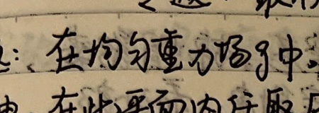
By Fermat's Principle of least time, $n_y \sin\left(\frac{\pi}{2} - \alpha\right) = \text{const} \implies n_y \cos\alpha = \text{const}$.
For the speed of light $v_y$ at depth $y$, $v_y = \frac{c}{n_y} \implies \frac{\cos\alpha}{v_y} = \text{const}$.
Analogous to the velocity of the particle, $v_y = \sqrt{2gy} \implies \frac{\cos\alpha}{\sqrt{y}} = \text{const}$.
And since $\cos\alpha = \frac{1}{\sqrt{1+(y')^2}} \implies y[1+(y')^2] = \text{const} = A$.
Let $y = A\sin^2\beta$,
$$ \therefore A\left[1+\left(\frac{dy}{dx}\right)^2\right] = \frac{A}{\sin^2\beta} \implies \left(\frac{dy}{dx}\right)^2 = \frac{1}{\sin^2\beta} - 1 = \cot^2\beta \implies \frac{dy}{dx} = \cot\beta $$On the other hand, differentiating $y$ gives $dy = 2A\sin\beta\cos\beta d\beta$.
Combining the two expressions gives $dx = 2A\sin^2\beta d\beta$.
Since at $x=0$, $y=0$, corresponding to $\beta=0$, integrating the above equations gives:
$$ x = \frac{A}{2}(2\beta - \sin 2\beta) \quad \text{and} \quad y = \frac{A}{2}(1 - \cos 2\beta) $$Let $R = \frac{A}{2}$ and $\varphi = 2\beta$.
$$ \therefore \begin{cases} x = R(\varphi - \sin\varphi) \\ y = R(1 - \cos\varphi) \end{cases} $$This means the path of fastest descent (Brachistochrone) is a cycloid!
Special Topic: High School Physics Experiments (Dynamics & Energy)
Experiment 4: Verify Newton's Laws of Motion
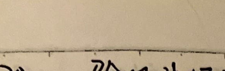
For a cart of mass $m$ and a sand bucket of mass $M$, the equations of motion are:
$$ \begin{cases} Mg - T = Ma \\ T = ma \end{cases} \implies a = \frac{M}{M+m} g $$1. Relationship between Acceleration and Force:
Take $m \gg M$, meaning the mass of the cart is much greater than the sand bucket, so $a \approx \frac{M}{m}g$. Continuously change $M$, meaning the external force $Mg$ continuously changes; from the paper tape hit by the timer, $a$ continuously changes. This verifies that $a \propto F$.
2. Relationship between Acceleration and Mass:
Keeping $a \approx \frac{M}{m}g$, add weights on the cart to change its mass $m$. From the paper tape, $a$ decreases. By plotting an $a - \frac{1}{m}$ graph, we find that $a \propto \frac{1}{m}$.
Experiment 5: Explore the Work-Energy Theorem
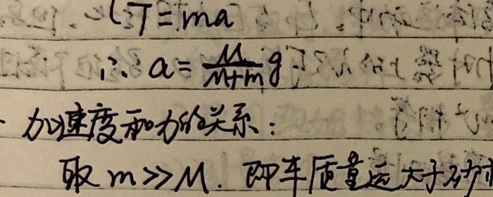
- Change the release height $h$ of block A, release A, and observe the distance block B is pushed on the rough surface.
- Change the mass $m_A$ of block A, release A from the same height, and observe the distance block B is pushed.
Experiment 6: Verify the Law of Conservation of Mechanical Energy
Experiment Objective: Verify the law of conservation of mechanical energy.
Equipment: Iron stand (with iron clamp), electromagnetic spark timer, heavy hammer (with paper tape clamp), paper tape, carbon paper, ruler, low voltage AC power supply ($4\sim 6\text{V}$, $50\text{Hz}$).
Principle: In free-fall motion where only gravity does work, potential energy $E_p$ and kinetic energy $E_k$ convert into each other, but the total mechanical energy is conserved. Using the velocity $v$ calculated from the points hit by the timer, verify whether the decrease in potential energy $\Delta E_p = mgh$ and the increase in kinetic energy $\Delta E_k = \frac{1}{2}mv^2$ are equal during the fall.
Procedure:
Measure the drop height $h_n$ directly with a ruler. Calculate the instantaneous velocity $v_n$ at point $n$ using the formula for the average velocity of the surrounding interval:
$$ v_n = \frac{h_{n+1} - h_{n-1}}{2T} $$Experiment 11: Explore the Motion of a Simple Pendulum and Measure Gravitational Acceleration
Experiment Objective: Use a simple pendulum to determine the local gravitational acceleration $g$.
Equipment: Small steel ball with a hole, thin string ($\approx 1\text{m}$), iron stand, meter stick, stopwatch, vernier caliper.
Principle: We can derive the period $T$ from the equations of motion:
$$ \begin{cases} mg\sin\theta dt = m dv \\ mgL(\cos\theta - \cos\varphi) = \frac{1}{2}mv^2 \end{cases} \implies v = \sqrt{2gL(\cos\theta - \cos\varphi)} $$The time differential $dt$ is:
$$ dt = \frac{ds}{v} = \frac{-L d\theta}{\sqrt{2gL(\cos\theta - \cos\varphi)}} $$For small angles, $\cos\theta \approx 1 - \frac{1}{2}\theta^2$ and $\cos\varphi \approx 1 - \frac{1}{2}\varphi^2$:
$$ dt \approx \frac{-L d\theta}{\sqrt{gL(\varphi^2 - \theta^2)}} $$Let $\theta = \varphi\cos\alpha \implies d\theta = -\varphi\sin\alpha d\alpha$:
$$ \therefore dt = \frac{-L(-\varphi\sin\alpha d\alpha)}{\sqrt{gL\varphi^2\sin^2\alpha}} = \sqrt{\frac{L}{g}} d\alpha $$Integrating over a full cycle ($2\pi$) yields the period $T = 2\pi\sqrt{\frac{L}{g}}$. Thus, $g = \frac{4\pi^2 L}{T^2}$. By measuring the pendulum length and the period of oscillation, $g$ can be found.
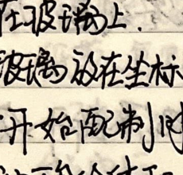
Procedure:
- Make a mark at the equilibrium position of the simple pendulum.
- Use a meter stick to measure the length of the string $l'$. Use a vernier caliper to measure the diameter of the pendulum bob $d$, both accurate to $\text{mm}$. The effective pendulum length is $L = l' + \frac{d}{2}$.
- Pull the simple pendulum away from the equilibrium position by a small angle ($<10^\circ$), release it, and use a stopwatch to measure the time for 50 full oscillations. Calculate the average time for one full oscillation $T$.
- Change the pendulum length, repeat the experiment, and plot a $T^2 - L$ graph. The slope $k = \frac{4\pi^2}{g}$, so $g = \frac{4\pi^2}{k}$.
Precautions: Start timing when the pendulum passes through the lowest (equilibrium) position, and only count oscillations when it passes through the lowest position moving in the same direction.
Experiment 14: Verify the Law of Conservation of Momentum
Experiment Objective: Verify the conservation of momentum during a collision.
Equipment: Slanted track, two steel balls of the same size but different masses ($m_1, m_2$), plumb bob, white paper, carbon paper, balance, ruler, compass, triangle ruler.
Principle & Procedure: Using a two-dimensional collision off a slanted track, the initial and final velocities are proportional to the horizontal distances $OP, OM, ON$ traveled by the balls before hitting the ground.
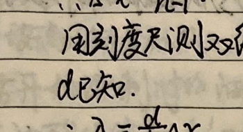
Quantities to measure: The masses of the incident and target balls $m_1, m_2$ (using the balance), the radii of the balls $r$, and the horizontal distances $OP, OM, ON$. The conservation of momentum is verified if the following relationship holds:
$$ m_1 \overline{OP} = m_1 \overline{OM} + m_2 \overline{ON} $$